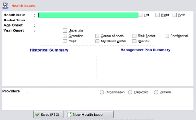

|  |
- If you have not yet read the chapter 'Basic Concepts' and the section Interface Design' - about the general
concepts of entering data in EasyGP, you should read it now before proceeding.
- The Health Issues section is accessed from the main toolbar by clicking the Health Issues icon.
|